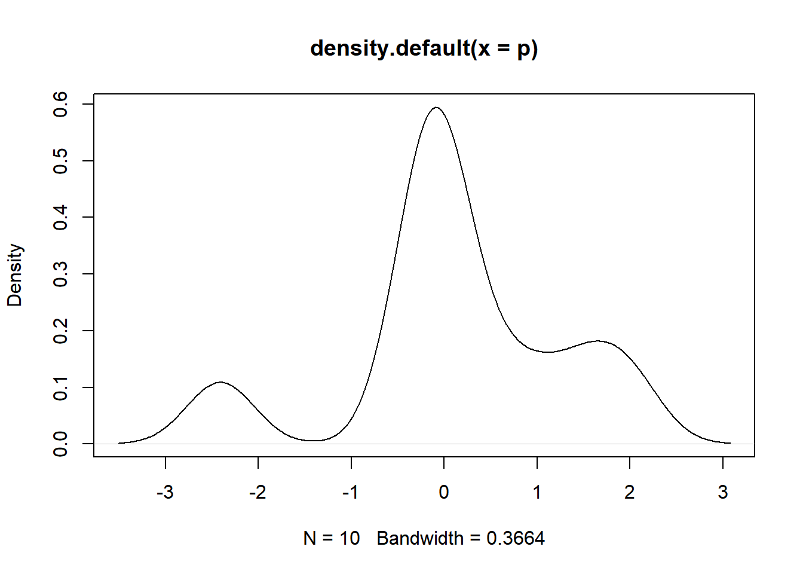

fpackage.check: Check if packages are installed (and install if not) in R (source).fsave: Save to processed data in repositoryfload: To load the files back after an fsavefshowdf: To print objects (tibbles / data.frame) nicely on screen in .rmdrm(list = ls())
fpackage.check <- function(packages) {
lapply(packages, FUN = function(x) {
if (!require(x, character.only = TRUE)) {
install.packages(x, dependencies = TRUE)
library(x, character.only = TRUE)
}
})
}
fsave <- function(x, file = NULL, location = "./data/processed/") {
ifelse(!dir.exists("data"), dir.create("data"), FALSE)
ifelse(!dir.exists("data/processed"), dir.create("data/processed"), FALSE)
if (is.null(file))
file = deparse(substitute(x))
datename <- substr(gsub("[:-]", "", Sys.time()), 1, 8)
totalname <- paste(location, datename, file, ".rda", sep = "")
save(x, file = totalname) #need to fix if file is reloaded as input name, not as x.
}
fload <- function(filename) {
load(filename)
get(ls()[ls() != "filename"])
}
fshowdf <- function(x, ...) {
knitr::kable(x, digits = 2, "html", ...) %>%
kableExtra::kable_styling(bootstrap_options = c("striped", "hover")) %>%
kableExtra::scroll_box(width = "100%", height = "300px")
}It is time to do some webscraping ourselves. In what follows is a short tutorial on webscraping where we will be collecting data from webpages on the internet. We will use the specific use case of political science department staff at several universities. What do they publish? Where? And with whom do they collaborate? We assume you have at least some experience with coding in R. In the rest of this tutorial, we will switch between base R and Tidyverse (just a bit), whatever is most convenient. (Note that this will happen often if you become an applied computational sociologist.)
For even more info see our SNASS book - Chapter 11
So for this tutorial, your starting script will look something like this:
######################################### Title: Webscraping science data in R Author: Bas Hofstra
######################################### Version: 13-06-2023
# start with clean workspace
rm(list = ls())
library(tidyverse) # I assume you already installed this one!
# install.packages('httr')
require(httr)
# install.packages('xml2')
require(xml2)
# install.packages('rvest')
require(rvest)
# install.packages('rselenium')
require(RSelenium)
# install.packages('reshape2')
require(reshape2)
# install.packages('devtools')
require(devtools)
# Note we're doing something different here. We're installing a *latest* version directly from
# GitHub This is because the released version of this packages contains some errors!
# devtools::install_github('jkeirstead/scholar')
require(scholar)What do we mean by anchor data? Our goal is to get to know:
(i) who the Political Science staff is at several universities,
(ii) what they publish with respect to scientific work, and
(iii) who they collaborate with.
So that means at least three data sources we need to collect from somewhere. What would be a nice starting (read: anchor) point be? First, we have to know who is on the sociology staff. Let’s check out the Leiden political science staff website. Here we see a nice list on who is on the staff in several pages. How do we get that data? It is actually quite simple, the package xml2 has a very nice function html_read() which simply derives the source html of a webpage:
# Let's first simply get the staff pages read_html is a function that simply extracts html webpages
# and puts them in xml format
lpol_staff <- read_html("https://www.universiteitleiden.nl/en/social-behavioural-sciences/political-science/staff#tab-1")
head(lpol_staff)#> $node
#> <pointer: 0x0000011ab83aff70>
#>
#> $doc
#> <pointer: 0x0000011ac8a93700>That looks kinda weird. What type of object did we store it by putting the html into lpol_staff1?
class(lpol_staff)#> [1] "xml_document" "xml_node"So it is is stored in something that’s called an xml object. Not important for now what that is. But it is important to extract the relevant table that we saw on the staff website. How do we do that? Go to one of the links above in a browser and then press “Inspect” on the webpage (usually: right click–>Inspect). In the html code we extracted, we need to go to one of the nodes first. If you move your cursor over “div” in the html code on the screen, the entire “body” of the page should become some shade of blue. This means that the elements encapsulated in the “body” node captures everything that turned blue.
Next, we need to look at the specific elements on the page that we need to extract. Somewhat by informed trial and error, looking for the correct code, we can select the elements we want. In the screenshot below, you see that the “td” elements actually are the ones we need. So we need code that looks for the node “main” and the “td” elements in the xml object and then extract those elements in it. Note that you can click on the arrows once you are in the “Inspect” mode in the web browser to trial-and-error to get at the correct elements.
# so we need to find WHERE the table is located in the html 'inspect element' in mozilla firefox or
# 'view page source' and you see that everything AFTER <a> in the 'body' of the page seems to be
# the table we do need
lpol_staff <- lpol_staff %>%
rvest::html_nodes("body") %>%
xml2::xml_find_all("//a") %>%
rvest::html_text()
head(lpol_staff)#> [1] "Leiden University" "Students" "Staff members"
#> [4] "Organisational structure" "Library" "\n"Seem like more useful data now. But can we improve by deleting some elements we do not need? Let’s first delete some of the useless information.
lpol_staff#> [1] "Leiden University"
#> [2] "Students"
#> [3] "Staff members"
#> [4] "Organisational structure"
#> [5] "Library"
#> [6] "\n"
#> [7] "\nAll categories "
#> [8] "\nPersons\n"
#> [9] "\nEducation\n"
#> [10] "\nResearch\n"
#> [11] "\nNews\n"
#> [12] "\nEvents\n"
#> [13] "\nDossiers\n"
#> [14] "\nLocations\n"
#> [15] "\nCourses\n"
#> [16] "\nVacancies\n"
#> [17] "\nOther\n"
#> [18] "\nKeywords\n"
#> [19] "\nnl\n"
#> [20] "Home"
#> [21] "Research"
#> [22] "Education"
#> [23] "Academic staff"
#> [24] "About us"
#> [25] "Collaboration"
#> [26] "Faculties"
#> [27] "Campus The Hague"
#> [28] "Alumni"
#> [29] "Library"
#> [30] "Home"
#> [31] "\nSocial and Behavioural Sciences\n"
#> [32] "\nPolitical Science\n"
#> [33] "Political Science"
#> [34] "Research"
#> [35] "Education"
#> [36] "PhD"
#> [37] "Organisation"
#> [38] "Staff"
#> [39] "Contact"
#> [40] "\n\n\n\n\n \n Adina Akbik\n Senior Assistant Professor\n \n "
#> [41] "\n\n\n\n\n \n Femke Bakker\n Senior assistant professor\n \n "
#> [42] "\n\n\n\n\n \n Ingrid van Biezen\n Professor of Comparative Politics\n \n "
#> [43] "\n\n\n\n\n \n Nicolas Blarel\n Associate Professor\n \n "
#> [44] "\n\n\n\n\n \n Arjen Boin\n Professor of Public Institutions and Governance\n \n "
#> [45] "\n\n\n\n\n \n Theo Brinkel\n Professor by Special Appointment Military-social studies\n \n "
#> [46] "\n\n\n\n\n\n \n Valentina Carraro\n Assistant Professor in Global Transformations and Governance Challenges\n \n "
#> [47] "\n\n\n\n\n \n Leila Demarest\n Associate Professor\n \n "
#> [48] "\n\n\n\n\n \n Matthew di Giuseppe\n Associate Professor\n \n "
#> [49] "\n\n\n\n\n \n Roos van der Haer\n Assistant Professor\n \n "
#> [50] "\n\n\n\n\n \n Gisela Hirschmann\n Senior Assistant Professor\n \n "
#> [51] "\n\n\n\n\n \n Joop van Holsteijn\n Scientific Director/ Professor Political Behaviour and Research Methods\n \n "
#> [52] "\n\n\n\n\n \n Corinna Jentzsch\n Assistant Professor\n \n "
#> [53] "\n\n\n\n\n \n Petr Kopecky\n Professor of Comparative Studies Political Parties and Party Systems\n \n "
#> [54] "\n\n\n\n\n \n Matthew Longo\n Senior Assistant Professor\n \n "
#> [55] "\n\n\n\n\n \n Tom Louwerse\n Associate professor\n \n "
#> [56] "\n\n\n\n\n \n Floris Mansvelt Beck\n Assistant Professor\n \n "
#> [57] "\n\n\n\n\n \n Juan Masullo Jimenez\n Assistant Professor\n \n "
#> [58] "\n\n\n\n\n \n Hilde van Meegdenburg\n Assistant Professor\n \n "
#> [59] "\n\n\n\n\n \n Michael Meffert\n Assistant Professor\n \n "
#> [60] "\n\n\n\n\n \n Frits Meijerink\n Assistant Professor\n \n "
#> [61] "\n\n\n\n\n \n Tim Mickler\n Assistant Professor\n \n "
#> [62] "\n\n\n\n\n \n Martijn Mos\n Assistant Professor\n \n "
#> [63] "\n\n\n\n\n \n Katharina Natter\n Senior assistant professor\n \n "
#> [64] "\n\n\n\n\n \n Christoph Niessen\n Assistant professor\n \n "
#> [65] "\n\n\n\n\n \n Paul Nieuwenburg\n Professor Political Philosophy\n \n "
#> [66] "\n\n\n\n\n \n Simon Otjes\n Senior Assistant Professor\n \n "
#> [67] "\n\n\n\n\n \n Hans Oversloot\n Senior Assistant Professor\n \n "
#> [68] "\n\n\n\n\n \n Jonathan Phillips\n Assistant Professor\n \n "
#> [69] "\n\n\n\n\n \n Rebecca Ploof\n Assistant Professor\n \n "
#> [70] "\n\n\n\n\n \n Karolina Pomorska\n Associate professor\n \n "
#> [71] "\n\n\n\n\n \n Francesco Ragazzi\n Associate professor\n \n "
#> [72] "\n\n\n\n\n \n Babak Rezaeedaryakenari\n Senior Assistant Professor\n \n "
#> [73] "\n\n\n\n\n \n Josh Robison\n Assistant Professor\n \n "
#> [74] "\n\n\n\n\n \n Michael Sampson\n Senior Assistant Professor\n \n "
#> [75] "\n\n\n\n\n\n \n Jan Aart Scholte\n Professor Global Transformations and Governance Challenges\n \n "
#> [76] "\n\n\n\n\n \n Jonah Schulhofer-Wohl\n Senior assistant professor\n \n "
#> [77] "\n\n\n\n\n \n Maria Spirova\n Associate Professor\n \n "
#> [78] "\n\n\n\n\n \n Tom Theuns\n Senior Assistant Professor\n \n "
#> [79] "\n\n\n\n\n \n Daniel Thomas\n Professor of International Relations\n \n "
#> [80] "\n\n\n\n\n \n Christina Luise Toenshoff\n Assistant professor\n \n "
#> [81] "\n\n\n\n\n \n Vasiliki (Billy) Tsagkroni\n Senior assistant professor\n \n "
#> [82] "\n\n\n\n\n \n Wouter Veenendaal\n Associate professor\n \n "
#> [83] "\n\n\n\n\n \n Claire Vergerio\n Senior Assistant Professor\n \n "
#> [84] "\n\n\n\n\n \n Marco Verschoor\n Assistant Professor\n \n "
#> [85] "\n\n\n\n\n \n Cynthia van Vonno\n Assistant Professor\n \n "
#> [86] "\n\n\n\n\n \n Niels van Willigen\n Associate Professor\n \n "
#> [87] "\n\n\n\n\n \n Nikoleta Yordanova\n Associate professor\n \n "
#> [88] "\n\n\n\n\n \n Yuan Yi Zhu\n Assistant professor\n \n "
#> [89] "\n\n\n\n\n \n Frank de Zwart\n Assistant Professor\n \n "
#> [90] "\n\n\n\n\n \n Alessia Aspide\n PhD candidate\n \n "
#> [91] "\n\n\n\n\n \n Cyan Bae\n PhD candidate\n \n "
#> [92] "\n\n\n\n\n \n Kathleen Brown\n PhD candidate\n \n "
#> [93] "\n\n\n\n\n \n Mateo Cohen\n External PhD candidate\n \n "
#> [94] "\n\n\n\n\n \n Jesse Doornenbal\n Lecturer\n \n "
#> [95] "\n\n\n\n\n \n Anastasia Ershova\n Postdoctoral Researcher\n \n "
#> [96] "\n\n\n\n\n \n Manuel Kaal\n PhD Candidate\n \n "
#> [97] "\n\n\n\n\n \n Eleftherios KARCHIMAKIS\n Lecturer\n \n "
#> [98] "\n\n\n\n\n \n Aleksandra Khokhlova\n PhD candidate\n \n "
#> [99] "\n\n\n\n\n \n Stijn Koenraads\n PhD candidate\n \n "
#> [100] "\n\n\n\n\n \n Hannah Kuhn\n PhD candidate\n \n "
#> [101] "\n\n\n\n\n \n Sabine Mokry\n PhD candidate\n \n "
#> [102] "\n\n\n\n\n \n Ildikó Plájás\n Postdoc\n \n "
#> [103] "\n\n\n\n\n \n Zach Reyna\n Postdoc\n \n "
#> [104] "\n\n\n\n\n \n Alexander Schilin\n PhD candidate/ Guest\n \n "
#> [105] "\n\n\n\n\n \n Pawan Sen\n PhD candidate\n \n "
#> [106] "\n\n\n\n\n \n Lukas Spielberger\n PhD candidate / guest\n \n "
#> [107] "\n\n\n\n\n \n Ruben van de Ven\n PhD candidate\n \n "
#> [108] "\n\n\n\n\n \n Anouk van Vliet\n Lecturer\n \n "
#> [109] "\n\n\n\n\n \n Denny van der Vlist\n PhD candidate\n \n "
#> [110] "\n\n\n\n\n \n Thijs Vos\n PhD candidate\n \n "
#> [111] "\n\n\n\n\n \n Rick van Well\n PhD candidate\n \n "
#> [112] "\n\n\n\n\n \n Daan van den Wollenberg\n PhD candidate / self funded\n \n "
#> [113] "\n\n\n\n\n \n Elina Zorina\n PhD candidate\n \n "
#> [114] "\n\n\n\n\n \n Rudy Andeweg\n Professor emeritus of Empirical Political Science\n \n "
#> [115] "\n\n\n\n\n \n Jelena Belic\n Lecturer\n \n "
#> [116] "\n\n\n\n\n \n Violet Benneker\n Guest\n \n "
#> [117] "\n\n\n\n\n \n Jelke Bethlehem\n Professor emeritus Survey Methodology\n \n "
#> [118] "\n\n\n\n\n \n Peter Castenmiller\n Lecturer\n \n "
#> [119] "\n\n\n\n\n \n Oda van Cranenburgh\n Guest\n \n "
#> [120] "\n\n\n\n\n \n Josette Daemen\n Guest\n \n "
#> [121] "\n\n\n\n\n \n Diana Davila Gordillo\n Guest - researcher\n \n "
#> [122] "\n\n\n\n\n \n Vincent de graaf\n Lecturer\n \n "
#> [123] "\n\n\n\n\n \n Rutger Hagen\n Lecturer\n \n "
#> [124] "\n\n\n\n\n \n Sense Hofstede\n Lecturer\n \n "
#> [125] "\n\n\n\n\n \n Galen Irwin\n \n "
#> [126] "\n\n\n\n\n\n \n Lars Janssen\n Lecturer\n \n "
#> [127] "\n\n\n\n\n \n Eleftherios KARCHIMAKIS\n Lecturer\n \n "
#> [128] "\n\n\n\n\n \n Müge Kinacioglu\n Lecturer\n \n "
#> [129] "\n\n\n\n\n \n Ruud Koole\n Professor emeritus Politicologie\n \n "
#> [130] "\n\n\n\n\n \n Amber Lauwers\n \n "
#> [131] "\n\n\n\n\n\n \n Gjovalin Macaj\n Lecturer\n \n "
#> [132] "\n\n\n\n\n \n Jan Meijer\n Lecturer\n \n "
#> [133] "\n\n\n\n\n \n Marijn Nagtzaam\n Lecturer\n \n "
#> [134] "\n\n\n\n\n \n Alexandros Ntaflos\n Lecturer\n \n "
#> [135] "\n\n\n\n\n \n Joyce Outshoorn\n Emeritus professor vrouwenstudies\n \n "
#> [136] "\n\n\n\n\n \n Huib Pellikaan\n Guest\n \n "
#> [137] "\n\n\n\n\n \n Ildikó Plájás\n Postdoc\n \n "
#> [138] "\n\n\n\n\n \n Julia Puente Duyn\n Lecturer\n \n "
#> [139] "\n\n\n\n\n \n Ellen van Reuler\n Lecturer\n \n "
#> [140] "\n\n\n\n\n \n Thomas Scarff\n Lecturer\n \n "
#> [141] "\n\n\n\n\n \n Radost Sharenkova-Toshkova\n Guest\n \n "
#> [142] "\n\n\n\n\n \n Xander Slaski\n Guest Researcher\n \n "
#> [143] "\n\n\n\n\n \n Danie Stockmann\n Guest\n \n "
#> [144] "\n\n\n\n\n \n Vishwesh Sundar\n Lecturer\n \n "
#> [145] "\n\n\n\n\n \n Olaf van der Veen\n Lecturer\n \n "
#> [146] "\n\n\n\n\n \n Harmen van der Veer\n Lecturer\n \n "
#> [147] "\n\n\n\n\n \n Amy Verdun\n Guest\n \n "
#> [148] "\n\n\n\n\n \n Anouk van Vliet\n Lecturer\n \n "
#> [149] "\n\n\n\n\n \n Carina van de Wetering\n Lecturer\n \n "
#> [150] "\n\n\n\n\n \n Gaélane Wolff\n PhD candidate/ Guest\n \n "
#> [151] "\n\n\n\n\n \n Wencke Appelman\n Study adviser\n \n "
#> [152] "\n\n\n\n\n \n Ariane Berends\n Study adviser\n \n "
#> [153] "\n\n\n\n\n \n Ester Blom\n Study Adviser\n \n "
#> [154] "\n\n\n\n\n \n Anna van Dijk\n Management/office-assistent\n \n "
#> [155] "\n\n\n\n\n \n Nathalie van Dooren\n Coordinator Marketing & Student Recruitment\n \n "
#> [156] "\n\n\n\n\n \n Desiree van Drongelen\n Staff Member Studentregistrations\n \n "
#> [157] "\n\n\n\n\n\n \n Fenna Egberink\n Board secretary\n \n "
#> [158] "\n\n\n\n\n \n Ingrid van Heeringen-Göbbels\n Institute manager\n \n "
#> [159] "\n\n\n\n\n \n Lianne Janssen\n Policy Officer Education and Quality Assurance\n \n "
#> [160] "\n\n\n\n\n \n Eline Joor\n Internationalisation Officer\n \n "
#> [161] "\n\n\n\n\n \n Ian Lau\n Study adviser\n \n "
#> [162] "\n\n\n\n\n \n Daniëlle Lovink\n Study Adviser\n \n "
#> [163] "\n\n\n\n\n \n Caroline Remmerswaal\n Secretary board of examiners\n \n "
#> [164] "\n\n\n\n\n \n Marjan Rijnja\n Teaching Coordinator\n \n "
#> [165] "\n\n\n\n\n \n Elka Smith\n Project Manager\n \n "
#> [166] "\n\n\n\n\n \n Judy Spruit\n Management/office-assistent\n \n "
#> [167] "\n\n\n\n\n \n Tessa Thomas\n Management assistant\n \n "
#> [168] "\n\n\n\n\n \n Gerard van der Veer\n Secretary board of examiners\n \n "
#> [169] "\n\n\n\n\n \n Ruben Verheul\n Web editor\n \n "
#> [170] "\n\n\n\n\n \n Jeanne Viet\n Communication staff member\n \n "
#> [171] "\n\n\n\n\n \n Denise Zeeuw-van Veen\n Management/office assistant\n \n "
#> [172] "Bachelor's programmes"
#> [173] "Master's programmes"
#> [174] "PhD programmes"
#> [175] "Summer Schools"
#> [176] "Other modes of study"
#> [177] "Bachelor's Open Days"
#> [178] "Master's Open Days"
#> [179] "Admission & Application"
#> [180] "Archaeology"
#> [181] "Governance and Global Affairs"
#> [182] "Humanities"
#> [183] "Law"
#> [184] "Medicine/LUMC"
#> [185] "Science"
#> [186] "Social and Behavioural Sciences"
#> [187] "African Studies Centre Leiden"
#> [188] "Honours Academy"
#> [189] "ICLON (Graduate School of Teaching)"
#> [190] "Working at Leiden University"
#> [191] "Support Leiden University"
#> [192] "Alumni"
#> [193] "Impact"
#> [194] "Leiden-Delft-Erasmus Universities"
#> [195] "Locations"
#> [196] "Disclaimer"
#> [197] "Cookies"
#> [198] "Privacy"
#> [199] "Contact"
#> [200] "Sign up to receive our monthly newsletter"
#> [201] ""
#> [202] ""
#> [203] ""
#> [204] ""
#> [205] ""
#> [206] "\nMore information. "lpol_staff <- lpol_staff[-c(1:39)]
lpol_staff <- lpol_staff[-c(133:length(lpol_staff))]
head(lpol_staff)#> [1] "\n\n\n\n\n \n Adina Akbik\n Senior Assistant Professor\n \n "
#> [2] "\n\n\n\n\n \n Femke Bakker\n Senior assistant professor\n \n "
#> [3] "\n\n\n\n\n \n Ingrid van Biezen\n Professor of Comparative Politics\n \n "
#> [4] "\n\n\n\n\n \n Nicolas Blarel\n Associate Professor\n \n "
#> [5] "\n\n\n\n\n \n Arjen Boin\n Professor of Public Institutions and Governance\n \n "
#> [6] "\n\n\n\n\n \n Theo Brinkel\n Professor by Special Appointment Military-social studies\n \n "fshowdf(lpol_staff)| x |
|---|
| Adina Akbik Senior Assistant Professor |
| Femke Bakker Senior assistant professor |
| Ingrid van Biezen Professor of Comparative Politics |
| Nicolas Blarel Associate Professor |
| Arjen Boin Professor of Public Institutions and Governance |
| Theo Brinkel Professor by Special Appointment Military-social studies |
| Valentina Carraro Assistant Professor in Global Transformations and Governance Challenges |
| Leila Demarest Associate Professor |
| Matthew di Giuseppe Associate Professor |
| Roos van der Haer Assistant Professor |
| Gisela Hirschmann Senior Assistant Professor |
| Joop van Holsteijn Scientific Director/ Professor Political Behaviour and Research Methods |
| Corinna Jentzsch Assistant Professor |
| Petr Kopecky Professor of Comparative Studies Political Parties and Party Systems |
| Matthew Longo Senior Assistant Professor |
| Tom Louwerse Associate professor |
| Floris Mansvelt Beck Assistant Professor |
| Juan Masullo Jimenez Assistant Professor |
| Hilde van Meegdenburg Assistant Professor |
| Michael Meffert Assistant Professor |
| Frits Meijerink Assistant Professor |
| Tim Mickler Assistant Professor |
| Martijn Mos Assistant Professor |
| Katharina Natter Senior assistant professor |
| Christoph Niessen Assistant professor |
| Paul Nieuwenburg Professor Political Philosophy |
| Simon Otjes Senior Assistant Professor |
| Hans Oversloot Senior Assistant Professor |
| Jonathan Phillips Assistant Professor |
| Rebecca Ploof Assistant Professor |
| Karolina Pomorska Associate professor |
| Francesco Ragazzi Associate professor |
| Babak Rezaeedaryakenari Senior Assistant Professor |
| Josh Robison Assistant Professor |
| Michael Sampson Senior Assistant Professor |
| Jan Aart Scholte Professor Global Transformations and Governance Challenges |
| Jonah Schulhofer-Wohl Senior assistant professor |
| Maria Spirova Associate Professor |
| Tom Theuns Senior Assistant Professor |
| Daniel Thomas Professor of International Relations |
| Christina Luise Toenshoff Assistant professor |
| Vasiliki (Billy) Tsagkroni Senior assistant professor |
| Wouter Veenendaal Associate professor |
| Claire Vergerio Senior Assistant Professor |
| Marco Verschoor Assistant Professor |
| Cynthia van Vonno Assistant Professor |
| Niels van Willigen Associate Professor |
| Nikoleta Yordanova Associate professor |
| Yuan Yi Zhu Assistant professor |
| Frank de Zwart Assistant Professor |
| Alessia Aspide PhD candidate |
| Cyan Bae PhD candidate |
| Kathleen Brown PhD candidate |
| Mateo Cohen External PhD candidate |
| Jesse Doornenbal Lecturer |
| Anastasia Ershova Postdoctoral Researcher |
| Manuel Kaal PhD Candidate |
| Eleftherios KARCHIMAKIS Lecturer |
| Aleksandra Khokhlova PhD candidate |
| Stijn Koenraads PhD candidate |
| Hannah Kuhn PhD candidate |
| Sabine Mokry PhD candidate |
| Ildikó Plájás Postdoc |
| Zach Reyna Postdoc |
| Alexander Schilin PhD candidate/ Guest |
| Pawan Sen PhD candidate |
| Lukas Spielberger PhD candidate / guest |
| Ruben van de Ven PhD candidate |
| Anouk van Vliet Lecturer |
| Denny van der Vlist PhD candidate |
| Thijs Vos PhD candidate |
| Rick van Well PhD candidate |
| Daan van den Wollenberg PhD candidate / self funded |
| Elina Zorina PhD candidate |
| Rudy Andeweg Professor emeritus of Empirical Political Science |
| Jelena Belic Lecturer |
| Violet Benneker Guest |
| Jelke Bethlehem Professor emeritus Survey Methodology |
| Peter Castenmiller Lecturer |
| Oda van Cranenburgh Guest |
| Josette Daemen Guest |
| Diana Davila Gordillo Guest - researcher |
| Vincent de graaf Lecturer |
| Rutger Hagen Lecturer |
| Sense Hofstede Lecturer |
| Galen Irwin |
| Lars Janssen Lecturer |
| Eleftherios KARCHIMAKIS Lecturer |
| Müge Kinacioglu Lecturer |
| Ruud Koole Professor emeritus Politicologie |
| Amber Lauwers |
| Gjovalin Macaj Lecturer |
| Jan Meijer Lecturer |
| Marijn Nagtzaam Lecturer |
| Alexandros Ntaflos Lecturer |
| Joyce Outshoorn Emeritus professor vrouwenstudies |
| Huib Pellikaan Guest |
| Ildikó Plájás Postdoc |
| Julia Puente Duyn Lecturer |
| Ellen van Reuler Lecturer |
| Thomas Scarff Lecturer |
| Radost Sharenkova-Toshkova Guest |
| Xander Slaski Guest Researcher |
| Danie Stockmann Guest |
| Vishwesh Sundar Lecturer |
| Olaf van der Veen Lecturer |
| Harmen van der Veer Lecturer |
| Amy Verdun Guest |
| Anouk van Vliet Lecturer |
| Carina van de Wetering Lecturer |
| Gaélane Wolff PhD candidate/ Guest |
| Wencke Appelman Study adviser |
| Ariane Berends Study adviser |
| Ester Blom Study Adviser |
| Anna van Dijk Management/office-assistent |
| Nathalie van Dooren Coordinator Marketing & Student Recruitment |
| Desiree van Drongelen Staff Member Studentregistrations |
| Fenna Egberink Board secretary |
| Ingrid van Heeringen-Göbbels Institute manager |
| Lianne Janssen Policy Officer Education and Quality Assurance |
| Eline Joor Internationalisation Officer |
| Ian Lau Study adviser |
| Daniëlle Lovink Study Adviser |
| Caroline Remmerswaal Secretary board of examiners |
| Marjan Rijnja Teaching Coordinator |
| Elka Smith Project Manager |
| Judy Spruit Management/office-assistent |
| Tessa Thomas Management assistant |
| Gerard van der Veer Secretary board of examiners |
| Ruben Verheul Web editor |
| Jeanne Viet Communication staff member |
| Denise Zeeuw-van Veen Management/office assistant |
Still looks a bit messy. Can we get it into a dataframe and split the column into useful columns?
lpol_staff <- data.frame(lpol_staff)
lpol_staff <- colsplit(lpol_staff$lpol_staff, " ", names = c("v1", "v2", "v3", "v4", "v5"))
fshowdf(lpol_staff, caption = "lpol_staff")| v1 | v2 | v3 | v4 | v5 |
|---|---|---|---|---|
| NA | NA | NA | Adina Akbik | Senior Assistant Professor |
| NA | NA | NA | Femke Bakker | Senior assistant professor |
| NA | NA | NA | Ingrid van Biezen | Professor of Comparative Politics |
| NA | NA | NA | Nicolas Blarel | Associate Professor |
| NA | NA | NA | Arjen Boin | Professor of Public Institutions and Governance |
| NA | NA | NA | Theo Brinkel | Professor by Special Appointment Military-social studies |
| NA | NA | NA | Valentina Carraro | Assistant Professor in Global Transformations and Governance Challenges |
| NA | NA | NA | Leila Demarest | Associate Professor |
| NA | NA | NA | Matthew di Giuseppe | Associate Professor |
| NA | NA | NA | Roos van der Haer | Assistant Professor |
| NA | NA | NA | Gisela Hirschmann | Senior Assistant Professor |
| NA | NA | NA | Joop van Holsteijn | Scientific Director/ Professor Political Behaviour and Research Methods |
| NA | NA | NA | Corinna Jentzsch | Assistant Professor |
| NA | NA | NA | Petr Kopecky | Professor of Comparative Studies Political Parties and Party Systems |
| NA | NA | NA | Matthew Longo | Senior Assistant Professor |
| NA | NA | NA | Tom Louwerse | Associate professor |
| NA | NA | NA | Floris Mansvelt Beck | Assistant Professor |
| NA | NA | NA | Juan Masullo Jimenez | Assistant Professor |
| NA | NA | NA | Hilde van Meegdenburg | Assistant Professor |
| NA | NA | NA | Michael Meffert | Assistant Professor |
| NA | NA | NA | Frits Meijerink | Assistant Professor |
| NA | NA | NA | Tim Mickler | Assistant Professor |
| NA | NA | NA | Martijn Mos | Assistant Professor |
| NA | NA | NA | Katharina Natter | Senior assistant professor |
| NA | NA | NA | Christoph Niessen | Assistant professor |
| NA | NA | NA | Paul Nieuwenburg | Professor Political Philosophy |
| NA | NA | NA | Simon Otjes | Senior Assistant Professor |
| NA | NA | NA | Hans Oversloot | Senior Assistant Professor |
| NA | NA | NA | Jonathan Phillips | Assistant Professor |
| NA | NA | NA | Rebecca Ploof | Assistant Professor |
| NA | NA | NA | Karolina Pomorska | Associate professor |
| NA | NA | NA | Francesco Ragazzi | Associate professor |
| NA | NA | NA | Babak Rezaeedaryakenari | Senior Assistant Professor |
| NA | NA | NA | Josh Robison | Assistant Professor |
| NA | NA | NA | Michael Sampson | Senior Assistant Professor |
| NA | NA | NA | Jan Aart Scholte | Professor Global Transformations and Governance Challenges |
| NA | NA | NA | Jonah Schulhofer-Wohl | Senior assistant professor |
| NA | NA | NA | Maria Spirova | Associate Professor |
| NA | NA | NA | Tom Theuns | Senior Assistant Professor |
| NA | NA | NA | Daniel Thomas | Professor of International Relations |
| NA | NA | NA | Christina Luise Toenshoff | Assistant professor |
| NA | NA | NA | Vasiliki (Billy) Tsagkroni | Senior assistant professor |
| NA | NA | NA | Wouter Veenendaal | Associate professor |
| NA | NA | NA | Claire Vergerio | Senior Assistant Professor |
| NA | NA | NA | Marco Verschoor | Assistant Professor |
| NA | NA | NA | Cynthia van Vonno | Assistant Professor |
| NA | NA | NA | Niels van Willigen | Associate Professor |
| NA | NA | NA | Nikoleta Yordanova | Associate professor |
| NA | NA | NA | Yuan Yi Zhu | Assistant professor |
| NA | NA | NA | Frank de Zwart | Assistant Professor |
| NA | NA | NA | Alessia Aspide | PhD candidate |
| NA | NA | NA | Cyan Bae | PhD candidate |
| NA | NA | NA | Kathleen Brown | PhD candidate |
| NA | NA | NA | Mateo Cohen | External PhD candidate |
| NA | NA | NA | Jesse Doornenbal | Lecturer |
| NA | NA | NA | Anastasia Ershova | Postdoctoral Researcher |
| NA | NA | NA | Manuel Kaal | PhD Candidate |
| NA | NA | NA | Eleftherios KARCHIMAKIS | Lecturer |
| NA | NA | NA | Aleksandra Khokhlova | PhD candidate |
| NA | NA | NA | Stijn Koenraads | PhD candidate |
| NA | NA | NA | Hannah Kuhn | PhD candidate |
| NA | NA | NA | Sabine Mokry | PhD candidate |
| NA | NA | NA | Ildikó Plájás | Postdoc |
| NA | NA | NA | Zach Reyna | Postdoc |
| NA | NA | NA | Alexander Schilin | PhD candidate/ Guest |
| NA | NA | NA | Pawan Sen | PhD candidate |
| NA | NA | NA | Lukas Spielberger | PhD candidate / guest |
| NA | NA | NA | Ruben van de Ven | PhD candidate |
| NA | NA | NA | Anouk van Vliet | Lecturer |
| NA | NA | NA | Denny van der Vlist | PhD candidate |
| NA | NA | NA | Thijs Vos | PhD candidate |
| NA | NA | NA | Rick van Well | PhD candidate |
| NA | NA | NA | Daan van den Wollenberg | PhD candidate / self funded |
| NA | NA | NA | Elina Zorina | PhD candidate |
| NA | NA | NA | Rudy Andeweg | Professor emeritus of Empirical Political Science |
| NA | NA | NA | Jelena Belic | Lecturer |
| NA | NA | NA | Violet Benneker | Guest |
| NA | NA | NA | Jelke Bethlehem | Professor emeritus Survey Methodology |
| NA | NA | NA | Peter Castenmiller | Lecturer |
| NA | NA | NA | Oda van Cranenburgh | Guest |
| NA | NA | NA | Josette Daemen | Guest |
| NA | NA | NA | Diana Davila Gordillo | Guest - researcher |
| NA | NA | NA | Vincent de graaf | Lecturer |
| NA | NA | NA | Rutger Hagen | Lecturer |
| NA | NA | NA | Sense Hofstede | Lecturer |
| NA | NA | NA | Galen Irwin | |
| NA | NA | NA | Lars Janssen | Lecturer |
| NA | NA | NA | Eleftherios KARCHIMAKIS | Lecturer |
| NA | NA | NA | Müge Kinacioglu | Lecturer |
| NA | NA | NA | Ruud Koole | Professor emeritus Politicologie |
| NA | NA | NA | Amber Lauwers | |
| NA | NA | NA | Gjovalin Macaj | Lecturer |
| NA | NA | NA | Jan Meijer | Lecturer |
| NA | NA | NA | Marijn Nagtzaam | Lecturer |
| NA | NA | NA | Alexandros Ntaflos | Lecturer |
| NA | NA | NA | Joyce Outshoorn | Emeritus professor vrouwenstudies |
| NA | NA | NA | Huib Pellikaan | Guest |
| NA | NA | NA | Ildikó Plájás | Postdoc |
| NA | NA | NA | Julia Puente Duyn | Lecturer |
| NA | NA | NA | Ellen van Reuler | Lecturer |
| NA | NA | NA | Thomas Scarff | Lecturer |
| NA | NA | NA | Radost Sharenkova-Toshkova | Guest |
| NA | NA | NA | Xander Slaski | Guest Researcher |
| NA | NA | NA | Danie Stockmann | Guest |
| NA | NA | NA | Vishwesh Sundar | Lecturer |
| NA | NA | NA | Olaf van der Veen | Lecturer |
| NA | NA | NA | Harmen van der Veer | Lecturer |
| NA | NA | NA | Amy Verdun | Guest |
| NA | NA | NA | Anouk van Vliet | Lecturer |
| NA | NA | NA | Carina van de Wetering | Lecturer |
| NA | NA | NA | Gaélane Wolff | PhD candidate/ Guest |
| NA | NA | NA | Wencke Appelman | Study adviser |
| NA | NA | NA | Ariane Berends | Study adviser |
| NA | NA | NA | Ester Blom | Study Adviser |
| NA | NA | NA | Anna van Dijk | Management/office-assistent |
| NA | NA | NA | Nathalie van Dooren | Coordinator Marketing & Student Recruitment |
| NA | NA | NA | Desiree van Drongelen | Staff Member Studentregistrations |
| NA | NA | NA | Fenna Egberink | Board secretary |
| NA | NA | NA | Ingrid van Heeringen-Göbbels | Institute manager |
| NA | NA | NA | Lianne Janssen | Policy Officer Education and Quality Assurance |
| NA | NA | NA | Eline Joor | Internationalisation Officer |
| NA | NA | NA | Ian Lau | Study adviser |
| NA | NA | NA | Daniëlle Lovink | Study Adviser |
| NA | NA | NA | Caroline Remmerswaal | Secretary board of examiners |
| NA | NA | NA | Marjan Rijnja | Teaching Coordinator |
| NA | NA | NA | Elka Smith | Project Manager |
| NA | NA | NA | Judy Spruit | Management/office-assistent |
| NA | NA | NA | Tessa Thomas | Management assistant |
| NA | NA | NA | Gerard van der Veer | Secretary board of examiners |
| NA | NA | NA | Ruben Verheul | Web editor |
| NA | NA | NA | Jeanne Viet | Communication staff member |
| NA | NA | NA | Denise Zeeuw-van Veen | Management/office assistant |
Nice! I think we only need column 4 and 5? And let’s name them nicely and delete any trailing or leading whitespace.
lpol_staff <- lpol_staff[, c("v4", "v5")]
names(lpol_staff) <- c("name", "func")
lpol_staff$name <- trimws(lpol_staff$name, which = c("both"), whitespace = "[ \t\r\n]")
lpol_staff$func <- trimws(lpol_staff$func, which = c("both"), whitespace = "[ \t\r\n]")
fshowdf(lpol_staff, caption = "lpol_staff")| name | func |
|---|---|
| Adina Akbik | Senior Assistant Professor |
| Femke Bakker | Senior assistant professor |
| Ingrid van Biezen | Professor of Comparative Politics |
| Nicolas Blarel | Associate Professor |
| Arjen Boin | Professor of Public Institutions and Governance |
| Theo Brinkel | Professor by Special Appointment Military-social studies |
| Valentina Carraro | Assistant Professor in Global Transformations and Governance Challenges |
| Leila Demarest | Associate Professor |
| Matthew di Giuseppe | Associate Professor |
| Roos van der Haer | Assistant Professor |
| Gisela Hirschmann | Senior Assistant Professor |
| Joop van Holsteijn | Scientific Director/ Professor Political Behaviour and Research Methods |
| Corinna Jentzsch | Assistant Professor |
| Petr Kopecky | Professor of Comparative Studies Political Parties and Party Systems |
| Matthew Longo | Senior Assistant Professor |
| Tom Louwerse | Associate professor |
| Floris Mansvelt Beck | Assistant Professor |
| Juan Masullo Jimenez | Assistant Professor |
| Hilde van Meegdenburg | Assistant Professor |
| Michael Meffert | Assistant Professor |
| Frits Meijerink | Assistant Professor |
| Tim Mickler | Assistant Professor |
| Martijn Mos | Assistant Professor |
| Katharina Natter | Senior assistant professor |
| Christoph Niessen | Assistant professor |
| Paul Nieuwenburg | Professor Political Philosophy |
| Simon Otjes | Senior Assistant Professor |
| Hans Oversloot | Senior Assistant Professor |
| Jonathan Phillips | Assistant Professor |
| Rebecca Ploof | Assistant Professor |
| Karolina Pomorska | Associate professor |
| Francesco Ragazzi | Associate professor |
| Babak Rezaeedaryakenari | Senior Assistant Professor |
| Josh Robison | Assistant Professor |
| Michael Sampson | Senior Assistant Professor |
| Jan Aart Scholte | Professor Global Transformations and Governance Challenges |
| Jonah Schulhofer-Wohl | Senior assistant professor |
| Maria Spirova | Associate Professor |
| Tom Theuns | Senior Assistant Professor |
| Daniel Thomas | Professor of International Relations |
| Christina Luise Toenshoff | Assistant professor |
| Vasiliki (Billy) Tsagkroni | Senior assistant professor |
| Wouter Veenendaal | Associate professor |
| Claire Vergerio | Senior Assistant Professor |
| Marco Verschoor | Assistant Professor |
| Cynthia van Vonno | Assistant Professor |
| Niels van Willigen | Associate Professor |
| Nikoleta Yordanova | Associate professor |
| Yuan Yi Zhu | Assistant professor |
| Frank de Zwart | Assistant Professor |
| Alessia Aspide | PhD candidate |
| Cyan Bae | PhD candidate |
| Kathleen Brown | PhD candidate |
| Mateo Cohen | External PhD candidate |
| Jesse Doornenbal | Lecturer |
| Anastasia Ershova | Postdoctoral Researcher |
| Manuel Kaal | PhD Candidate |
| Eleftherios KARCHIMAKIS | Lecturer |
| Aleksandra Khokhlova | PhD candidate |
| Stijn Koenraads | PhD candidate |
| Hannah Kuhn | PhD candidate |
| Sabine Mokry | PhD candidate |
| Ildikó Plájás | Postdoc |
| Zach Reyna | Postdoc |
| Alexander Schilin | PhD candidate/ Guest |
| Pawan Sen | PhD candidate |
| Lukas Spielberger | PhD candidate / guest |
| Ruben van de Ven | PhD candidate |
| Anouk van Vliet | Lecturer |
| Denny van der Vlist | PhD candidate |
| Thijs Vos | PhD candidate |
| Rick van Well | PhD candidate |
| Daan van den Wollenberg | PhD candidate / self funded |
| Elina Zorina | PhD candidate |
| Rudy Andeweg | Professor emeritus of Empirical Political Science |
| Jelena Belic | Lecturer |
| Violet Benneker | Guest |
| Jelke Bethlehem | Professor emeritus Survey Methodology |
| Peter Castenmiller | Lecturer |
| Oda van Cranenburgh | Guest |
| Josette Daemen | Guest |
| Diana Davila Gordillo | Guest - researcher |
| Vincent de graaf | Lecturer |
| Rutger Hagen | Lecturer |
| Sense Hofstede | Lecturer |
| Galen Irwin | |
| Lars Janssen | Lecturer |
| Eleftherios KARCHIMAKIS | Lecturer |
| Müge Kinacioglu | Lecturer |
| Ruud Koole | Professor emeritus Politicologie |
| Amber Lauwers | |
| Gjovalin Macaj | Lecturer |
| Jan Meijer | Lecturer |
| Marijn Nagtzaam | Lecturer |
| Alexandros Ntaflos | Lecturer |
| Joyce Outshoorn | Emeritus professor vrouwenstudies |
| Huib Pellikaan | Guest |
| Ildikó Plájás | Postdoc |
| Julia Puente Duyn | Lecturer |
| Ellen van Reuler | Lecturer |
| Thomas Scarff | Lecturer |
| Radost Sharenkova-Toshkova | Guest |
| Xander Slaski | Guest Researcher |
| Danie Stockmann | Guest |
| Vishwesh Sundar | Lecturer |
| Olaf van der Veen | Lecturer |
| Harmen van der Veer | Lecturer |
| Amy Verdun | Guest |
| Anouk van Vliet | Lecturer |
| Carina van de Wetering | Lecturer |
| Gaélane Wolff | PhD candidate/ Guest |
| Wencke Appelman | Study adviser |
| Ariane Berends | Study adviser |
| Ester Blom | Study Adviser |
| Anna van Dijk | Management/office-assistent |
| Nathalie van Dooren | Coordinator Marketing & Student Recruitment |
| Desiree van Drongelen | Staff Member Studentregistrations |
| Fenna Egberink | Board secretary |
| Ingrid van Heeringen-Göbbels | Institute manager |
| Lianne Janssen | Policy Officer Education and Quality Assurance |
| Eline Joor | Internationalisation Officer |
| Ian Lau | Study adviser |
| Daniëlle Lovink | Study Adviser |
| Caroline Remmerswaal | Secretary board of examiners |
| Marjan Rijnja | Teaching Coordinator |
| Elka Smith | Project Manager |
| Judy Spruit | Management/office-assistent |
| Tessa Thomas | Management assistant |
| Gerard van der Veer | Secretary board of examiners |
| Ruben Verheul | Web editor |
| Jeanne Viet | Communication staff member |
| Denise Zeeuw-van Veen | Management/office assistant |
Not bad, I think! Let’s add an affiliation to these folks. And try to split first and last names. Note that I simply get the first “word” as the first name and the rest as the last name: for most cases this works, but definitely not for all.
lpol_staff$affiliation <- "leiden university"
lpol_staff$name <- tolower(lpol_staff$name)
lpol_staff$first_name <- word(lpol_staff$name, 1) # neat stringr package function
lpol_staff$last_name <- sub(".*? ", "", lpol_staff$name)How do the data look?
fshowdf(lpol_staff, caption = "lpol_staff")| name | func | affiliation | first_name | last_name |
|---|---|---|---|---|
| adina akbik | Senior Assistant Professor | leiden university | adina | akbik |
| femke bakker | Senior assistant professor | leiden university | femke | bakker |
| ingrid van biezen | Professor of Comparative Politics | leiden university | ingrid | van biezen |
| nicolas blarel | Associate Professor | leiden university | nicolas | blarel |
| arjen boin | Professor of Public Institutions and Governance | leiden university | arjen | boin |
| theo brinkel | Professor by Special Appointment Military-social studies | leiden university | theo | brinkel |
| valentina carraro | Assistant Professor in Global Transformations and Governance Challenges | leiden university | valentina | carraro |
| leila demarest | Associate Professor | leiden university | leila | demarest |
| matthew di giuseppe | Associate Professor | leiden university | matthew | di giuseppe |
| roos van der haer | Assistant Professor | leiden university | roos | van der haer |
| gisela hirschmann | Senior Assistant Professor | leiden university | gisela | hirschmann |
| joop van holsteijn | Scientific Director/ Professor Political Behaviour and Research Methods | leiden university | joop | van holsteijn |
| corinna jentzsch | Assistant Professor | leiden university | corinna | jentzsch |
| petr kopecky | Professor of Comparative Studies Political Parties and Party Systems | leiden university | petr | kopecky |
| matthew longo | Senior Assistant Professor | leiden university | matthew | longo |
| tom louwerse | Associate professor | leiden university | tom | louwerse |
| floris mansvelt beck | Assistant Professor | leiden university | floris | mansvelt beck |
| juan masullo jimenez | Assistant Professor | leiden university | juan | masullo jimenez |
| hilde van meegdenburg | Assistant Professor | leiden university | hilde | van meegdenburg |
| michael meffert | Assistant Professor | leiden university | michael | meffert |
| frits meijerink | Assistant Professor | leiden university | frits | meijerink |
| tim mickler | Assistant Professor | leiden university | tim | mickler |
| martijn mos | Assistant Professor | leiden university | martijn | mos |
| katharina natter | Senior assistant professor | leiden university | katharina | natter |
| christoph niessen | Assistant professor | leiden university | christoph | niessen |
| paul nieuwenburg | Professor Political Philosophy | leiden university | paul | nieuwenburg |
| simon otjes | Senior Assistant Professor | leiden university | simon | otjes |
| hans oversloot | Senior Assistant Professor | leiden university | hans | oversloot |
| jonathan phillips | Assistant Professor | leiden university | jonathan | phillips |
| rebecca ploof | Assistant Professor | leiden university | rebecca | ploof |
| karolina pomorska | Associate professor | leiden university | karolina | pomorska |
| francesco ragazzi | Associate professor | leiden university | francesco | ragazzi |
| babak rezaeedaryakenari | Senior Assistant Professor | leiden university | babak | rezaeedaryakenari |
| josh robison | Assistant Professor | leiden university | josh | robison |
| michael sampson | Senior Assistant Professor | leiden university | michael | sampson |
| jan aart scholte | Professor Global Transformations and Governance Challenges | leiden university | jan | aart scholte |
| jonah schulhofer-wohl | Senior assistant professor | leiden university | jonah | schulhofer-wohl |
| maria spirova | Associate Professor | leiden university | maria | spirova |
| tom theuns | Senior Assistant Professor | leiden university | tom | theuns |
| daniel thomas | Professor of International Relations | leiden university | daniel | thomas |
| christina luise toenshoff | Assistant professor | leiden university | christina | luise toenshoff |
| vasiliki (billy) tsagkroni | Senior assistant professor | leiden university | vasiliki | (billy) tsagkroni |
| wouter veenendaal | Associate professor | leiden university | wouter | veenendaal |
| claire vergerio | Senior Assistant Professor | leiden university | claire | vergerio |
| marco verschoor | Assistant Professor | leiden university | marco | verschoor |
| cynthia van vonno | Assistant Professor | leiden university | cynthia | van vonno |
| niels van willigen | Associate Professor | leiden university | niels | van willigen |
| nikoleta yordanova | Associate professor | leiden university | nikoleta | yordanova |
| yuan yi zhu | Assistant professor | leiden university | yuan | yi zhu |
| frank de zwart | Assistant Professor | leiden university | frank | de zwart |
| alessia aspide | PhD candidate | leiden university | alessia | aspide |
| cyan bae | PhD candidate | leiden university | cyan | bae |
| kathleen brown | PhD candidate | leiden university | kathleen | brown |
| mateo cohen | External PhD candidate | leiden university | mateo | cohen |
| jesse doornenbal | Lecturer | leiden university | jesse | doornenbal |
| anastasia ershova | Postdoctoral Researcher | leiden university | anastasia | ershova |
| manuel kaal | PhD Candidate | leiden university | manuel | kaal |
| eleftherios karchimakis | Lecturer | leiden university | eleftherios | karchimakis |
| aleksandra khokhlova | PhD candidate | leiden university | aleksandra | khokhlova |
| stijn koenraads | PhD candidate | leiden university | stijn | koenraads |
| hannah kuhn | PhD candidate | leiden university | hannah | kuhn |
| sabine mokry | PhD candidate | leiden university | sabine | mokry |
| ildikó plájás | Postdoc | leiden university | ildikó | plájás |
| zach reyna | Postdoc | leiden university | zach | reyna |
| alexander schilin | PhD candidate/ Guest | leiden university | alexander | schilin |
| pawan sen | PhD candidate | leiden university | pawan | sen |
| lukas spielberger | PhD candidate / guest | leiden university | lukas | spielberger |
| ruben van de ven | PhD candidate | leiden university | ruben | van de ven |
| anouk van vliet | Lecturer | leiden university | anouk | van vliet |
| denny van der vlist | PhD candidate | leiden university | denny | van der vlist |
| thijs vos | PhD candidate | leiden university | thijs | vos |
| rick van well | PhD candidate | leiden university | rick | van well |
| daan van den wollenberg | PhD candidate / self funded | leiden university | daan | van den wollenberg |
| elina zorina | PhD candidate | leiden university | elina | zorina |
| rudy andeweg | Professor emeritus of Empirical Political Science | leiden university | rudy | andeweg |
| jelena belic | Lecturer | leiden university | jelena | belic |
| violet benneker | Guest | leiden university | violet | benneker |
| jelke bethlehem | Professor emeritus Survey Methodology | leiden university | jelke | bethlehem |
| peter castenmiller | Lecturer | leiden university | peter | castenmiller |
| oda van cranenburgh | Guest | leiden university | oda | van cranenburgh |
| josette daemen | Guest | leiden university | josette | daemen |
| diana davila gordillo | Guest - researcher | leiden university | diana | davila gordillo |
| vincent de graaf | Lecturer | leiden university | vincent | de graaf |
| rutger hagen | Lecturer | leiden university | rutger | hagen |
| sense hofstede | Lecturer | leiden university | sense | hofstede |
| galen irwin | leiden university | galen | irwin | |
| lars janssen | Lecturer | leiden university | lars | janssen |
| eleftherios karchimakis | Lecturer | leiden university | eleftherios | karchimakis |
| müge kinacioglu | Lecturer | leiden university | müge | kinacioglu |
| ruud koole | Professor emeritus Politicologie | leiden university | ruud | koole |
| amber lauwers | leiden university | amber | lauwers | |
| gjovalin macaj | Lecturer | leiden university | gjovalin | macaj |
| jan meijer | Lecturer | leiden university | jan | meijer |
| marijn nagtzaam | Lecturer | leiden university | marijn | nagtzaam |
| alexandros ntaflos | Lecturer | leiden university | alexandros | ntaflos |
| joyce outshoorn | Emeritus professor vrouwenstudies | leiden university | joyce | outshoorn |
| huib pellikaan | Guest | leiden university | huib | pellikaan |
| ildikó plájás | Postdoc | leiden university | ildikó | plájás |
| julia puente duyn | Lecturer | leiden university | julia | puente duyn |
| ellen van reuler | Lecturer | leiden university | ellen | van reuler |
| thomas scarff | Lecturer | leiden university | thomas | scarff |
| radost sharenkova-toshkova | Guest | leiden university | radost | sharenkova-toshkova |
| xander slaski | Guest Researcher | leiden university | xander | slaski |
| danie stockmann | Guest | leiden university | danie | stockmann |
| vishwesh sundar | Lecturer | leiden university | vishwesh | sundar |
| olaf van der veen | Lecturer | leiden university | olaf | van der veen |
| harmen van der veer | Lecturer | leiden university | harmen | van der veer |
| amy verdun | Guest | leiden university | amy | verdun |
| anouk van vliet | Lecturer | leiden university | anouk | van vliet |
| carina van de wetering | Lecturer | leiden university | carina | van de wetering |
| gaélane wolff | PhD candidate/ Guest | leiden university | gaélane | wolff |
| wencke appelman | Study adviser | leiden university | wencke | appelman |
| ariane berends | Study adviser | leiden university | ariane | berends |
| ester blom | Study Adviser | leiden university | ester | blom |
| anna van dijk | Management/office-assistent | leiden university | anna | van dijk |
| nathalie van dooren | Coordinator Marketing & Student Recruitment | leiden university | nathalie | van dooren |
| desiree van drongelen | Staff Member Studentregistrations | leiden university | desiree | van drongelen |
| fenna egberink | Board secretary | leiden university | fenna | egberink |
| ingrid van heeringen-göbbels | Institute manager | leiden university | ingrid | van heeringen-göbbels |
| lianne janssen | Policy Officer Education and Quality Assurance | leiden university | lianne | janssen |
| eline joor | Internationalisation Officer | leiden university | eline | joor |
| ian lau | Study adviser | leiden university | ian | lau |
| daniëlle lovink | Study Adviser | leiden university | daniëlle | lovink |
| caroline remmerswaal | Secretary board of examiners | leiden university | caroline | remmerswaal |
| marjan rijnja | Teaching Coordinator | leiden university | marjan | rijnja |
| elka smith | Project Manager | leiden university | elka | smith |
| judy spruit | Management/office-assistent | leiden university | judy | spruit |
| tessa thomas | Management assistant | leiden university | tessa | thomas |
| gerard van der veer | Secretary board of examiners | leiden university | gerard | van der veer |
| ruben verheul | Web editor | leiden university | ruben | verheul |
| jeanne viet | Communication staff member | leiden university | jeanne | viet |
| denise zeeuw-van veen | Management/office assistant | leiden university | denise | zeeuw-van veen |
Pretty good, so I think we can move on to the next section.
What we now have is a data frame of political staff members. We successfully gathered some anchor data set we can move on with. Next, we need to find out some more political science departments. Let’s start with Radboud University. You can find that here. Notice that it has multiple pages. Let’s try and loop through those pages. For that we need a neat trick: for loops. Can you follow the code below? We can do all kinds of things automatically in a for loop.
# The 'for loop': for every i in a vector (can be numbers, strings, etc.), say 1 to 10, you can do
# 'something'
for (i in 1:10) {
print(i) # So for every i from 1 to 10, we print i, see what happens!
}#> [1] 1
#> [1] 2
#> [1] 3
#> [1] 4
#> [1] 5
#> [1] 6
#> [1] 7
#> [1] 8
#> [1] 9
#> [1] 10# or do something more complicated
p <- rnorm(10, 0, 1) # draw 10 normally distributed numbers with mean 0 and SD 1 (so z-scores, essentially)
plot(density(p)) # relatively, normal, right?
u <- 0 # make an element we can fill up in the loop below
for (i in 1:10) {
u[i] <- p[i] * p[i] # get p-squared for every i-th element in vector p
print(u[i]) # and print that squared element
}#> [1] 0.7103711
#> [1] 0.04876619
#> [1] 0.03341959
#> [1] 2.218741
#> [1] 0.003151499
#> [1] 5.7949
#> [1] 0.1116696
#> [1] 3.913528
#> [1] 0.02585033
#> [1] 6.110654e-05Let’s try and get the staff from Radboud University political science. We use a for loop to go through the four pages with staff members first. Do you understand what is happening below? We first make a list in which we can store the four html’s. We then run a for loop with which I make a call to the website, each time pasting a different page index at the end of the url.
# firstr making a list
rpol_staff <- list()
for (i in 1:4) {
rpol_staff[[i]] <- read_html(paste0("https://www.ru.nl/en/search/scope/staff/staff-department/773?page=",
i - 1)) # storing the four pages in the list
}Now I want to get the relevant information out. We already know it is stored in some class that is not particularly useful to us. We want similar data compared to Leiden University: so we need function and name. In the code below we try to look for a css path in the html code called **“.meta-data__item–field-employee-positions”** to get relevant information on function. We then apply a number of regular expressions to clean that particular string element.
func <- list()
for (i in 1:4) {
func[[i]] <- html_nodes(rpol_staff[[i]], css = ".meta-data__item--field-employee-positions")
func[[i]] <- sub(".*\n\n", "", func[[i]])
func[[i]] <- sub("\\(.*", "", func[[i]])
func[[i]] <- trimws(func[[i]], which = c("both"), whitespace = "[ \t\r\n]")
}So now we have function, we need to get names. This is more or less the same operation as before for Leiden University political science. But not how each university stores names differently. We again use a for loop where for each list element we extract the “h2” element from the “body” of the html. We then select the relevant data (I already peaked in the data, and it is in those indexes).
for (i in 1:4) {
rpol_staff[[i]] <- rpol_staff[[i]] %>%
rvest::html_nodes("body") %>%
xml2::xml_find_all("//h2") %>%
rvest::html_text()
rpol_staff[[i]] <- rpol_staff[[i]][1:23]
rpol_staff[[i]] <- rpol_staff[[i]][-c(1:3)]
}The fourth page is not entirely “filled” with names, only five persons left. So we delete the rest of the data. We then unlist those lists and bind them together in a data frame! We also do some data operations to clean up those strings.
rpol_staff[[4]] <- rpol_staff[[4]][-c(6:length(rpol_staff[[4]]))]
# unlist the lists
rpol_staff <- unlist(rpol_staff)
func <- unlist(func)
# columnbind together, nice variable names
rpol_staff <- data.frame(cbind(rpol_staff, func))
names(rpol_staff) <- c("name", "func")
# some clenaing of the strings.
rpol_staff$name <- tolower(rpol_staff$name)
rpol_staff$name <- gsub("dr ", "", rpol_staff$name)
rpol_staff$name <- gsub("prof. ", "", rpol_staff$name)
rpol_staff$name <- trimws(rpol_staff$name, which = c("both"), whitespace = "[ \t\r\n]")Now it is time to perform some regular expressions. The names of Radboud university are stored quite differently: first names between brackets, last names before the comma. We also need to get the nobiliary particles (“van”, “van de”, etc.). For this we use regular expressions (a whole field on itself!).
# we first extract first name from in between the brackets.
rpol_staff$first_name <- str_extract_all(rpol_staff$name, "(?<=\\().+?(?=\\))")
# we then look for last names before the the comma
rpol_staff$last_name <- sub(",.*", "", rpol_staff$name)
# we then extract from the name string everything in between '.' and '(', to find out whether there
# are any nobiliary particles
ln <- str_match(rpol_staff$name, "\\.\\s*(.*?)\\s*\\(")[, 2]
ln <- sub(".*\\.", "", ln)
# if there are such strings, we paste them together with the last names, and voila
rpol_staff$last_name <- ifelse(!is.na(ln), paste0(ln, " ", rpol_staff$last_name), rpol_staff$last_name)
# Finally the affiliation
rpol_staff$affiliation <- "radboud university"
fshowdf(rpol_staff, caption = "rpol_staff")| name | func | first_name | last_name | affiliation |
|---|---|---|---|---|
| afa, n. (nada) | PhD candidate | nada | afa | radboud university |
| amjad, m. (maria) | employee | maria | amjad | radboud university |
| boonekamp-van lit, j.m. (joep) | employee | joep | boonekamp-van lit | radboud university |
| bos, n. (nienke) | external PhD candidate | nienke | bos | radboud university |
| bouemar, v.y.g. (victor) | PhD candidate | victor | bouemar | radboud university |
| cras, m.f.a. (maarten) | course and research employee | maarten | cras | radboud university |
| derock, d.j. (daniel) | assistant professor | daniel | derock | radboud university |
| eikenaar, t. (teun) | postdoc | teun | eikenaar | radboud university |
| elsas, e.j. van (erika) | assistant professor | erika | van elsas | radboud university |
| israelsen, s.j.p. (shelliann) | assistant professor | shelliann | israelsen | radboud university |
| jacobs, k.t.e. (kristof) | associate professor | kristof | jacobs | radboud university |
| joachim, j.m. (jutta) | associate professor | jutta | joachim | radboud university |
| kamp-alons, g.c. van der (gerry) | associate professor | gerry | van der kamp-alons | radboud university |
| kets, g. (gaard) | assistant professor | gaard | kets | radboud university |
| lehr, a.r. (alex) | associate professor | alex | lehr | radboud university |
| malejacq, r.a.a. (romain) | associate professor | romain | malejacq | radboud university |
| manevska, k. (katerina) | assistant professor | katerina | manevska | radboud university |
| meibauer, g.m. (gustav) | assistant professor | gustav | meibauer | radboud university |
| mochtak, m. (michal) | researcher | michal | mochtak | radboud university |
| molendijk, t. (tine) | guest researcher | tine | molendijk | radboud university |
| qiao-franco, g. (guangyu) | assistant professor | guangyu | qiao-franco | radboud university |
| reinalda, b. (bob) | Fellow | bob | reinalda | radboud university |
| rivera quinones, m. (miguel a) | teacher | miguel a | rivera quinones | radboud university |
| ruth-lovell, s.p. (saskia) | associate professor | saskia | ruth-lovell | radboud university |
| stel, n.m. (nora) | assistant professor | nora | stel | radboud university |
| suurmond, j.m. (jeannine) | employee | jeannine | suurmond | radboud university |
| swedlund, h (haley) | associate professor | haley | swedlund | radboud university |
| tempels, t.h. (tjidde) | assistant professor | tjidde | tempels | radboud university |
| terpstra, n.m. (niels) | assistant professor | niels | terpstra | radboud university |
| turolla, m. (maya) | employee | maya | turolla | radboud university |
| veer, r.a. van der (reinout) | assistant professor | reinout | van der veer | radboud university |
| verkoren, w (willemijn) | associate professor | willemijn | verkoren | radboud university |
| vossen, k.p.s.s. (koen) | teacher | koen | vossen | radboud university |
| wigger, a. (angela) | associate professor | angela | wigger | radboud university |
| zaslove, a.s. (andrej) | associate professor | andrej | zaslove | radboud university |
| eck-boerboom, a.t.w. van (amanda) | management assistant | amanda | van eck-boerboom | radboud university |
| gilhuis, n. (naomi) | PhD candidate | naomi | gilhuis | radboud university |
| goris, y. (yannicke) | PhD candidate | yannicke | goris | radboud university |
| gravesteijn, e.m.l. (emily) | PhD candidate | emily | gravesteijn | radboud university |
| hablous, g. (gijs) | PhD candidate | gijs | hablous | radboud university |
| holzhauer, j.n. (niklas) | PhD candidate | niklas | holzhauer | radboud university |
| jacobs, w.a.g. (helma) | in-house emergency officer | helma | jacobs | radboud university |
| kindt, r. (rosa) | PhD candidate | rosa | kindt | radboud university |
| klomberg, t.m. (tessa) | operations manager | tessa | klomberg | radboud university |
| knieriem, m.j.a. (marijn) | PhD candidate | marijn | knieriem | radboud university |
| koenen, s.a. (stella) | PhD candidate | stella | koenen | radboud university |
| kwaks, j.m. (juul) | PhD candidate | juul | kwaks | radboud university |
| linke, v. (vera) | PhD candidate | vera | linke | radboud university |
| maarel, s. van der (sofie) | PhD candidate | sofie | van der maarel | radboud university |
| monaco, m. (marco) | PhD candidate | marco | monaco | radboud university |
| munezero, c. (camille) | PhD candidate | camille | munezero | radboud university |
| nijhuis, c.l. (chris) | employee | chris | nijhuis | radboud university |
| overhaart, e.a.p. (puck) | PhD candidate | puck | overhaart | radboud university |
| ham, c.t. van (carolien) | professor | carolien | van ham | radboud university |
| leeuwen, m. van (mathijs) | professor | mathijs | van leeuwen | radboud university |
| verbeek, j.a. (bertjan) | professor | bertjan | verbeek | radboud university |
| verloo, m.m.t. (mieke) | Fellow | mieke | verloo | radboud university |
| verweij, d.e.m. (désirée) | professor | désirée | verweij | radboud university |
| vleuten, j.m. van der (anna) | professor | anna | van der vleuten | radboud university |
| wissenburg, m.l.j. (marcel) | Department chairman | marcel | wissenburg | radboud university |
| rekker, r.s.b. (roderik) | assistant professor | roderik | rekker | radboud university |
| römgens, i.d.j. (indra) | PhD candidate | indra | römgens | radboud university |
| salah, l. (lema) | PhD candidate | lema | salah | radboud university |
| steultjens, l.m. (liza) | PhD candidate | liza | steultjens | radboud university |
| theuwis, m. (marie) | PhD candidate | marie | theuwis | radboud university |
| afa, n. (nada) | PhD candidate | nada | afa | radboud university |
# unsure whether this happened, but I need to unlist first name!
rpol_staff$first_name <- unlist(rpol_staff$first_name)
class(rpol_staff$first_name) #seems to work#> [1] "character"The third department we’re checking is the VU university department of political science. Again, let’s first get the html.
### VU UNIVRESITY 'inspect element' in mozilla firefox or 'view page source' and you see that
### everything AFTER <p> in the 'body' of the page seems to be the table we do need
vpol_staff <- read_html("https://vu.nl/en/about-vu/faculties/faculty-of-social-sciences/teams/staff-political-science-and-public-administration")We then inspect the page again, and find that we need the “p” elements in the html. Yet it is not stored very nicely, and so we need to extract odd and even elements to get functions and names. Can you follow what happens below?
vpol_staff <- vpol_staff %>%
rvest::html_nodes("body") %>%
xml2::xml_find_all("//p") %>%
rvest::html_text()
head(vpol_staff)#> [1] "Click \"read more\" to go to the corresponding research profile. "
#> [2] "dr. Loes Aaldering"
#> [3] "\n Assistant Professor\n\n\n "
#> [4] "prof. dr. Bastiaan van Apeldoorn"
#> [5] "\n Full Professor\n\n\n "
#> [6] "Daniela Andrade"fodd <- function(x) x%%2 != 0 # function to get odd elements
feven <- function(x) x%%2 == 0 # function to get even elements
name <- vpol_staff[feven(1:length(vpol_staff))] # get even elements
func <- vpol_staff[fodd(1:length(vpol_staff))] # get uneven elements
# some data selection
func <- func[-1]
func <- func[1:65]
name <- name[1:65]
# bind them together
vpol_staff <- data.frame(cbind(name, func))Now we need to do some string cleaning, basically getting the titles out of the names, and then delete some white spaces here and there, and extract first and last names.
vpol_staff$name <- tolower(vpol_staff$name)
vpol_staff$name <- gsub("dr.", "", vpol_staff$name)
vpol_staff$name <- gsub("prof. dr.", "", vpol_staff$name)
vpol_staff$name <- gsub("prof.", "", vpol_staff$name)
vpol_staff$name <- gsub(", bsc", "", vpol_staff$name)
vpol_staff$name <- gsub(", msc", "", vpol_staff$name)
vpol_staff$name <- gsub(", ma", "", vpol_staff$name)
vpol_staff$name <- gsub("mr.", "", vpol_staff$name)
vpol_staff$name <- gsub("ir.", "", vpol_staff$name)
vpol_staff$name <- gsub("//.", "", vpol_staff$name)
vpol_staff$name <- gsub("//,", "", vpol_staff$name)
vpol_staff$name <- trimws(vpol_staff$name, which = c("both"), whitespace = "[ \t\r\n]")
vpol_staff$func <- trimws(vpol_staff$func, which = c("both"), whitespace = "[ \t\r\n]")
# add affiliation and first and last name
vpol_staff$affiliation <- "vu university amsterdam"
vpol_staff$first_name <- word(vpol_staff$name, 1) # neat stringr package function
vpol_staff$last_name <- sub(".*? ", "", vpol_staff$name)Now we want to row bind all these data together such that we can continue with further cleaning of the names and finding Google Scholar profiles!
staff <- rbind(lpol_staff, rpol_staff, vpol_staff)
fshowdf(staff, caption = "staff")| name | func | affiliation | first_name | last_name |
|---|---|---|---|---|
| adina akbik | Senior Assistant Professor | leiden university | adina | akbik |
| femke bakker | Senior assistant professor | leiden university | femke | bakker |
| ingrid van biezen | Professor of Comparative Politics | leiden university | ingrid | van biezen |
| nicolas blarel | Associate Professor | leiden university | nicolas | blarel |
| arjen boin | Professor of Public Institutions and Governance | leiden university | arjen | boin |
| theo brinkel | Professor by Special Appointment Military-social studies | leiden university | theo | brinkel |
| valentina carraro | Assistant Professor in Global Transformations and Governance Challenges | leiden university | valentina | carraro |
| leila demarest | Associate Professor | leiden university | leila | demarest |
| matthew di giuseppe | Associate Professor | leiden university | matthew | di giuseppe |
| roos van der haer | Assistant Professor | leiden university | roos | van der haer |
| gisela hirschmann | Senior Assistant Professor | leiden university | gisela | hirschmann |
| joop van holsteijn | Scientific Director/ Professor Political Behaviour and Research Methods | leiden university | joop | van holsteijn |
| corinna jentzsch | Assistant Professor | leiden university | corinna | jentzsch |
| petr kopecky | Professor of Comparative Studies Political Parties and Party Systems | leiden university | petr | kopecky |
| matthew longo | Senior Assistant Professor | leiden university | matthew | longo |
| tom louwerse | Associate professor | leiden university | tom | louwerse |
| floris mansvelt beck | Assistant Professor | leiden university | floris | mansvelt beck |
| juan masullo jimenez | Assistant Professor | leiden university | juan | masullo jimenez |
| hilde van meegdenburg | Assistant Professor | leiden university | hilde | van meegdenburg |
| michael meffert | Assistant Professor | leiden university | michael | meffert |
| frits meijerink | Assistant Professor | leiden university | frits | meijerink |
| tim mickler | Assistant Professor | leiden university | tim | mickler |
| martijn mos | Assistant Professor | leiden university | martijn | mos |
| katharina natter | Senior assistant professor | leiden university | katharina | natter |
| christoph niessen | Assistant professor | leiden university | christoph | niessen |
| paul nieuwenburg | Professor Political Philosophy | leiden university | paul | nieuwenburg |
| simon otjes | Senior Assistant Professor | leiden university | simon | otjes |
| hans oversloot | Senior Assistant Professor | leiden university | hans | oversloot |
| jonathan phillips | Assistant Professor | leiden university | jonathan | phillips |
| rebecca ploof | Assistant Professor | leiden university | rebecca | ploof |
| karolina pomorska | Associate professor | leiden university | karolina | pomorska |
| francesco ragazzi | Associate professor | leiden university | francesco | ragazzi |
| babak rezaeedaryakenari | Senior Assistant Professor | leiden university | babak | rezaeedaryakenari |
| josh robison | Assistant Professor | leiden university | josh | robison |
| michael sampson | Senior Assistant Professor | leiden university | michael | sampson |
| jan aart scholte | Professor Global Transformations and Governance Challenges | leiden university | jan | aart scholte |
| jonah schulhofer-wohl | Senior assistant professor | leiden university | jonah | schulhofer-wohl |
| maria spirova | Associate Professor | leiden university | maria | spirova |
| tom theuns | Senior Assistant Professor | leiden university | tom | theuns |
| daniel thomas | Professor of International Relations | leiden university | daniel | thomas |
| christina luise toenshoff | Assistant professor | leiden university | christina | luise toenshoff |
| vasiliki (billy) tsagkroni | Senior assistant professor | leiden university | vasiliki | (billy) tsagkroni |
| wouter veenendaal | Associate professor | leiden university | wouter | veenendaal |
| claire vergerio | Senior Assistant Professor | leiden university | claire | vergerio |
| marco verschoor | Assistant Professor | leiden university | marco | verschoor |
| cynthia van vonno | Assistant Professor | leiden university | cynthia | van vonno |
| niels van willigen | Associate Professor | leiden university | niels | van willigen |
| nikoleta yordanova | Associate professor | leiden university | nikoleta | yordanova |
| yuan yi zhu | Assistant professor | leiden university | yuan | yi zhu |
| frank de zwart | Assistant Professor | leiden university | frank | de zwart |
| alessia aspide | PhD candidate | leiden university | alessia | aspide |
| cyan bae | PhD candidate | leiden university | cyan | bae |
| kathleen brown | PhD candidate | leiden university | kathleen | brown |
| mateo cohen | External PhD candidate | leiden university | mateo | cohen |
| jesse doornenbal | Lecturer | leiden university | jesse | doornenbal |
| anastasia ershova | Postdoctoral Researcher | leiden university | anastasia | ershova |
| manuel kaal | PhD Candidate | leiden university | manuel | kaal |
| eleftherios karchimakis | Lecturer | leiden university | eleftherios | karchimakis |
| aleksandra khokhlova | PhD candidate | leiden university | aleksandra | khokhlova |
| stijn koenraads | PhD candidate | leiden university | stijn | koenraads |
| hannah kuhn | PhD candidate | leiden university | hannah | kuhn |
| sabine mokry | PhD candidate | leiden university | sabine | mokry |
| ildikó plájás | Postdoc | leiden university | ildikó | plájás |
| zach reyna | Postdoc | leiden university | zach | reyna |
| alexander schilin | PhD candidate/ Guest | leiden university | alexander | schilin |
| pawan sen | PhD candidate | leiden university | pawan | sen |
| lukas spielberger | PhD candidate / guest | leiden university | lukas | spielberger |
| ruben van de ven | PhD candidate | leiden university | ruben | van de ven |
| anouk van vliet | Lecturer | leiden university | anouk | van vliet |
| denny van der vlist | PhD candidate | leiden university | denny | van der vlist |
| thijs vos | PhD candidate | leiden university | thijs | vos |
| rick van well | PhD candidate | leiden university | rick | van well |
| daan van den wollenberg | PhD candidate / self funded | leiden university | daan | van den wollenberg |
| elina zorina | PhD candidate | leiden university | elina | zorina |
| rudy andeweg | Professor emeritus of Empirical Political Science | leiden university | rudy | andeweg |
| jelena belic | Lecturer | leiden university | jelena | belic |
| violet benneker | Guest | leiden university | violet | benneker |
| jelke bethlehem | Professor emeritus Survey Methodology | leiden university | jelke | bethlehem |
| peter castenmiller | Lecturer | leiden university | peter | castenmiller |
| oda van cranenburgh | Guest | leiden university | oda | van cranenburgh |
| josette daemen | Guest | leiden university | josette | daemen |
| diana davila gordillo | Guest - researcher | leiden university | diana | davila gordillo |
| vincent de graaf | Lecturer | leiden university | vincent | de graaf |
| rutger hagen | Lecturer | leiden university | rutger | hagen |
| sense hofstede | Lecturer | leiden university | sense | hofstede |
| galen irwin | leiden university | galen | irwin | |
| lars janssen | Lecturer | leiden university | lars | janssen |
| eleftherios karchimakis | Lecturer | leiden university | eleftherios | karchimakis |
| müge kinacioglu | Lecturer | leiden university | müge | kinacioglu |
| ruud koole | Professor emeritus Politicologie | leiden university | ruud | koole |
| amber lauwers | leiden university | amber | lauwers | |
| gjovalin macaj | Lecturer | leiden university | gjovalin | macaj |
| jan meijer | Lecturer | leiden university | jan | meijer |
| marijn nagtzaam | Lecturer | leiden university | marijn | nagtzaam |
| alexandros ntaflos | Lecturer | leiden university | alexandros | ntaflos |
| joyce outshoorn | Emeritus professor vrouwenstudies | leiden university | joyce | outshoorn |
| huib pellikaan | Guest | leiden university | huib | pellikaan |
| ildikó plájás | Postdoc | leiden university | ildikó | plájás |
| julia puente duyn | Lecturer | leiden university | julia | puente duyn |
| ellen van reuler | Lecturer | leiden university | ellen | van reuler |
| thomas scarff | Lecturer | leiden university | thomas | scarff |
| radost sharenkova-toshkova | Guest | leiden university | radost | sharenkova-toshkova |
| xander slaski | Guest Researcher | leiden university | xander | slaski |
| danie stockmann | Guest | leiden university | danie | stockmann |
| vishwesh sundar | Lecturer | leiden university | vishwesh | sundar |
| olaf van der veen | Lecturer | leiden university | olaf | van der veen |
| harmen van der veer | Lecturer | leiden university | harmen | van der veer |
| amy verdun | Guest | leiden university | amy | verdun |
| anouk van vliet | Lecturer | leiden university | anouk | van vliet |
| carina van de wetering | Lecturer | leiden university | carina | van de wetering |
| gaélane wolff | PhD candidate/ Guest | leiden university | gaélane | wolff |
| wencke appelman | Study adviser | leiden university | wencke | appelman |
| ariane berends | Study adviser | leiden university | ariane | berends |
| ester blom | Study Adviser | leiden university | ester | blom |
| anna van dijk | Management/office-assistent | leiden university | anna | van dijk |
| nathalie van dooren | Coordinator Marketing & Student Recruitment | leiden university | nathalie | van dooren |
| desiree van drongelen | Staff Member Studentregistrations | leiden university | desiree | van drongelen |
| fenna egberink | Board secretary | leiden university | fenna | egberink |
| ingrid van heeringen-göbbels | Institute manager | leiden university | ingrid | van heeringen-göbbels |
| lianne janssen | Policy Officer Education and Quality Assurance | leiden university | lianne | janssen |
| eline joor | Internationalisation Officer | leiden university | eline | joor |
| ian lau | Study adviser | leiden university | ian | lau |
| daniëlle lovink | Study Adviser | leiden university | daniëlle | lovink |
| caroline remmerswaal | Secretary board of examiners | leiden university | caroline | remmerswaal |
| marjan rijnja | Teaching Coordinator | leiden university | marjan | rijnja |
| elka smith | Project Manager | leiden university | elka | smith |
| judy spruit | Management/office-assistent | leiden university | judy | spruit |
| tessa thomas | Management assistant | leiden university | tessa | thomas |
| gerard van der veer | Secretary board of examiners | leiden university | gerard | van der veer |
| ruben verheul | Web editor | leiden university | ruben | verheul |
| jeanne viet | Communication staff member | leiden university | jeanne | viet |
| denise zeeuw-van veen | Management/office assistant | leiden university | denise | zeeuw-van veen |
| afa, n. (nada) | PhD candidate | radboud university | nada | afa |
| amjad, m. (maria) | employee | radboud university | maria | amjad |
| boonekamp-van lit, j.m. (joep) | employee | radboud university | joep | boonekamp-van lit |
| bos, n. (nienke) | external PhD candidate | radboud university | nienke | bos |
| bouemar, v.y.g. (victor) | PhD candidate | radboud university | victor | bouemar |
| cras, m.f.a. (maarten) | course and research employee | radboud university | maarten | cras |
| derock, d.j. (daniel) | assistant professor | radboud university | daniel | derock |
| eikenaar, t. (teun) | postdoc | radboud university | teun | eikenaar |
| elsas, e.j. van (erika) | assistant professor | radboud university | erika | van elsas |
| israelsen, s.j.p. (shelliann) | assistant professor | radboud university | shelliann | israelsen |
| jacobs, k.t.e. (kristof) | associate professor | radboud university | kristof | jacobs |
| joachim, j.m. (jutta) | associate professor | radboud university | jutta | joachim |
| kamp-alons, g.c. van der (gerry) | associate professor | radboud university | gerry | van der kamp-alons |
| kets, g. (gaard) | assistant professor | radboud university | gaard | kets |
| lehr, a.r. (alex) | associate professor | radboud university | alex | lehr |
| malejacq, r.a.a. (romain) | associate professor | radboud university | romain | malejacq |
| manevska, k. (katerina) | assistant professor | radboud university | katerina | manevska |
| meibauer, g.m. (gustav) | assistant professor | radboud university | gustav | meibauer |
| mochtak, m. (michal) | researcher | radboud university | michal | mochtak |
| molendijk, t. (tine) | guest researcher | radboud university | tine | molendijk |
| qiao-franco, g. (guangyu) | assistant professor | radboud university | guangyu | qiao-franco |
| reinalda, b. (bob) | Fellow | radboud university | bob | reinalda |
| rivera quinones, m. (miguel a) | teacher | radboud university | miguel a | rivera quinones |
| ruth-lovell, s.p. (saskia) | associate professor | radboud university | saskia | ruth-lovell |
| stel, n.m. (nora) | assistant professor | radboud university | nora | stel |
| suurmond, j.m. (jeannine) | employee | radboud university | jeannine | suurmond |
| swedlund, h (haley) | associate professor | radboud university | haley | swedlund |
| tempels, t.h. (tjidde) | assistant professor | radboud university | tjidde | tempels |
| terpstra, n.m. (niels) | assistant professor | radboud university | niels | terpstra |
| turolla, m. (maya) | employee | radboud university | maya | turolla |
| veer, r.a. van der (reinout) | assistant professor | radboud university | reinout | van der veer |
| verkoren, w (willemijn) | associate professor | radboud university | willemijn | verkoren |
| vossen, k.p.s.s. (koen) | teacher | radboud university | koen | vossen |
| wigger, a. (angela) | associate professor | radboud university | angela | wigger |
| zaslove, a.s. (andrej) | associate professor | radboud university | andrej | zaslove |
| eck-boerboom, a.t.w. van (amanda) | management assistant | radboud university | amanda | van eck-boerboom |
| gilhuis, n. (naomi) | PhD candidate | radboud university | naomi | gilhuis |
| goris, y. (yannicke) | PhD candidate | radboud university | yannicke | goris |
| gravesteijn, e.m.l. (emily) | PhD candidate | radboud university | emily | gravesteijn |
| hablous, g. (gijs) | PhD candidate | radboud university | gijs | hablous |
| holzhauer, j.n. (niklas) | PhD candidate | radboud university | niklas | holzhauer |
| jacobs, w.a.g. (helma) | in-house emergency officer | radboud university | helma | jacobs |
| kindt, r. (rosa) | PhD candidate | radboud university | rosa | kindt |
| klomberg, t.m. (tessa) | operations manager | radboud university | tessa | klomberg |
| knieriem, m.j.a. (marijn) | PhD candidate | radboud university | marijn | knieriem |
| koenen, s.a. (stella) | PhD candidate | radboud university | stella | koenen |
| kwaks, j.m. (juul) | PhD candidate | radboud university | juul | kwaks |
| linke, v. (vera) | PhD candidate | radboud university | vera | linke |
| maarel, s. van der (sofie) | PhD candidate | radboud university | sofie | van der maarel |
| monaco, m. (marco) | PhD candidate | radboud university | marco | monaco |
| munezero, c. (camille) | PhD candidate | radboud university | camille | munezero |
| nijhuis, c.l. (chris) | employee | radboud university | chris | nijhuis |
| overhaart, e.a.p. (puck) | PhD candidate | radboud university | puck | overhaart |
| ham, c.t. van (carolien) | professor | radboud university | carolien | van ham |
| leeuwen, m. van (mathijs) | professor | radboud university | mathijs | van leeuwen |
| verbeek, j.a. (bertjan) | professor | radboud university | bertjan | verbeek |
| verloo, m.m.t. (mieke) | Fellow | radboud university | mieke | verloo |
| verweij, d.e.m. (désirée) | professor | radboud university | désirée | verweij |
| vleuten, j.m. van der (anna) | professor | radboud university | anna | van der vleuten |
| wissenburg, m.l.j. (marcel) | Department chairman | radboud university | marcel | wissenburg |
| rekker, r.s.b. (roderik) | assistant professor | radboud university | roderik | rekker |
| römgens, i.d.j. (indra) | PhD candidate | radboud university | indra | römgens |
| salah, l. (lema) | PhD candidate | radboud university | lema | salah |
| steultjens, l.m. (liza) | PhD candidate | radboud university | liza | steultjens |
| theuwis, m. (marie) | PhD candidate | radboud university | marie | theuwis |
| afa, n. (nada) | PhD candidate | radboud university | nada | afa |
| loes aaldering | Assistant Professor | vu university amsterdam | loes | aaldering |
| bastiaan van apeldoorn | Full Professor | vu university amsterdam | bastiaan | van apeldoorn |
| daniela ande | Lecturer | vu university amsterdam | daniela | ande |
| alana castro de azevedo | PhD candidate | vu university amsterdam | alana | castro de azevedo |
| jelle van baardewijk | Assistant Professor | vu university amsterdam | jelle | van baardewijk |
| bas becker | PhD candidate | vu university amsterdam | bas | becker |
| thijs de boer | PhD candidate | vu university amsterdam | thijs | de boer |
| hans bosselaar | Research Associate | vu university amsterdam | hans | bosselaar |
| hans boutellier | Endowed Professor | vu university amsterdam | hans | boutellier |
| jeanne de bruijn | Emeritus Professor | vu university amsterdam | jeanne | de bruijn |
| madalina busuioc | Full Professor | vu university amsterdam | madalina | busuioc |
| aylin aydin cakir | Lecturer | vu university amsterdam | aylin | aydin cakir |
| sinan çankaya | Assistant Professor | vu university amsterdam | sinan | çankaya |
| peter castenmiller | Lecturer | vu university amsterdam | peter | castenmiller |
| eric cezne | Lecturer | vu university amsterdam | eric | cezne |
| liberty chee | Lecturer | vu university amsterdam | liberty | chee |
| ben crum | Full Professor, Scientific director VU School of Governance | vu university amsterdam | ben | crum |
| serena does | Endowed Professor Social Inequality & Resilience | vu university amsterdam | serena | does |
| yunus baris ertürk | PhD candidate, Junior Lecturer | vu university amsterdam | yunus | baris ertürk |
| yarin eski | Assistant Professor of Public Administration | vu university amsterdam | yarin | eski |
| fred fleurke | Emeritus Professor | vu university amsterdam | fred | fleurke |
| gjalt de graaf | Full Professor, Department head | vu university amsterdam | gjalt | de graaf |
| nana de graaff | Associate Professor | vu university amsterdam | nana | de graaff |
| hans van den heuvel | Emeritus Professor | vu university amsterdam | hans | van den heuvel |
| john hogan | Lecturer | vu university amsterdam | john | hogan |
| jan hoogland | Assistant Professor | vu university amsterdam | jan | hoogland |
| jonathon matthew hoye | Lecturer | vu university amsterdam | jonathon | matthew hoye |
| hortense jongen | Assistant Professor | vu university amsterdam | hortense | jongen |
| leo huberts | Emeritus Professor | vu university amsterdam | leo | huberts |
| thomas janssen | Lecturer | vu university amsterdam | thomas | janssen |
| wynand kastart | Lecturer | vu university amsterdam | wynand | kastart |
| hans keman | Emeritus Professor | vu university amsterdam | hans | keman |
| maria kourpa | Lecturer | vu university amsterdam | maria | kourpa |
| benjamin leidorf-tidå | PhD candidate | vu university amsterdam | benjamin | leidorf-tidå |
| imogen t. liu | Assistant professor | vu university amsterdam | imogen |
|
| geert luteijn | Lecturer | vu university amsterdam | geert | luteijn |
| maaike matelski | Lecturer | vu university amsterdam | maaike | matelski |
| stefano merlo | PhD candidate, Junior Lecturer | vu university amsterdam | stefano | merlo |
| patrick mello | Assistant professor | vu university amsterdam | patrick | mello |
| ajgm van montfort | Associate Professor | vu university amsterdam | ajgm | van montfort |
| montserrat koloffon rosas | PhD student | vu university amsterdam | montserrat | koloffon rosas |
| steven otterman | PhD candidate, Junior Lecturer | vu university amsterdam | steven | otterman |
| patrick overeem | Universitair Docent | vu university amsterdam | patrick | overeem |
| henk overbeek | Emeritus Professor | vu university amsterdam | henk | overbeek |
| philipp pattberg | Full Professor | vu university amsterdam | philipp | pattberg |
| maeve powlick | Lecturer | vu university amsterdam | maeve | powlick |
| michiel van schagen | Lecturer | vu university amsterdam | michiel | van schagen |
| kayla schwoerer | Assistant professor | vu university amsterdam | kayla | schwoerer |
| katherine senneville | Lecturer | vu university amsterdam | katherine | senneville |
| frédérique six | Associate Professor | vu university amsterdam | frédérique | six |
| . boris slijper | Lecturer | vu university amsterdam | . | boris slijper |
| diederik stadig | PhD candidate , Junior Lecturer | vu university amsterdam | diederik | stadig |
| ronald van steden | Associate Professor | vu university amsterdam | ronald | van steden |
| özlem terzi | Lecturer | vu university amsterdam | özlem | terzi |
| js timmer | Assistant Professor | vu university amsterdam | js | timmer |
| willem trommel | Full Professor | vu university amsterdam | willem | trommel |
| lieselot vandenbussche | Assistant Professor | vu university amsterdam | lieselot | vandenbussche |
| bram verhulst | Lecturer | vu university amsterdam | bram | verhulst |
| sietske van der vliet | Lecturer | vu university amsterdam | sietske | van der vliet |
| catherine de vries | Full Professor | vu university amsterdam | catherine | de vries |
| fp wagenaar | Assistant Professor | vu university amsterdam | fp | wagenaar |
| wolfgang wagner | Full Professor | vu university amsterdam | wolfgang | wagner |
| chendi wang | Assistant professor | vu university amsterdam | chendi | wang |
| pieter van wijnen | Lecturer | vu university amsterdam | pieter | van wijnen |
| kristina weißmüller | Assistant professor | vu university amsterdam | kristina | weißmüller |
So that’s it for now. You’ve learned, with trial and error, to webscrape staff from university websites. Let’s save the data and check later whether you can find out the publication networks of these folks.
fsave(staff)Copyright © 2023 Jochem Tolsma / Rob Franken / Anne Maaike Mulders / Bas Hofstra